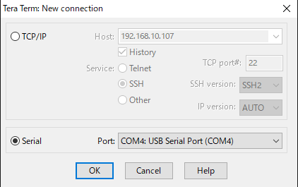
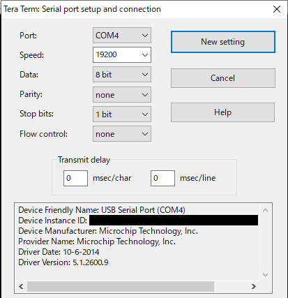
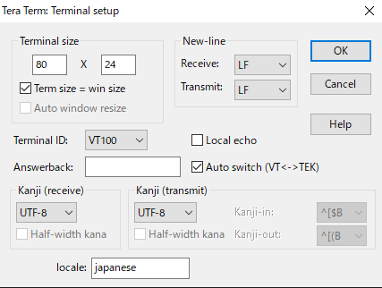

Check Device Manager.
Software setting of puts output destination (when com port of RBoard is com6)

The example below uses COM4
teraterm
software link Click [teraterm-X.XXX.exe]After downloading, run the exe to install.
Check Serial. -> Port:COM4 -> Click [OK]

menu bar:Setup -> Serial port... -> Speed:19200 -> Click [New setting]

menu bar:Setup -> Terminal -> Receive:LF , Transmit:LF -> Click [OK]
